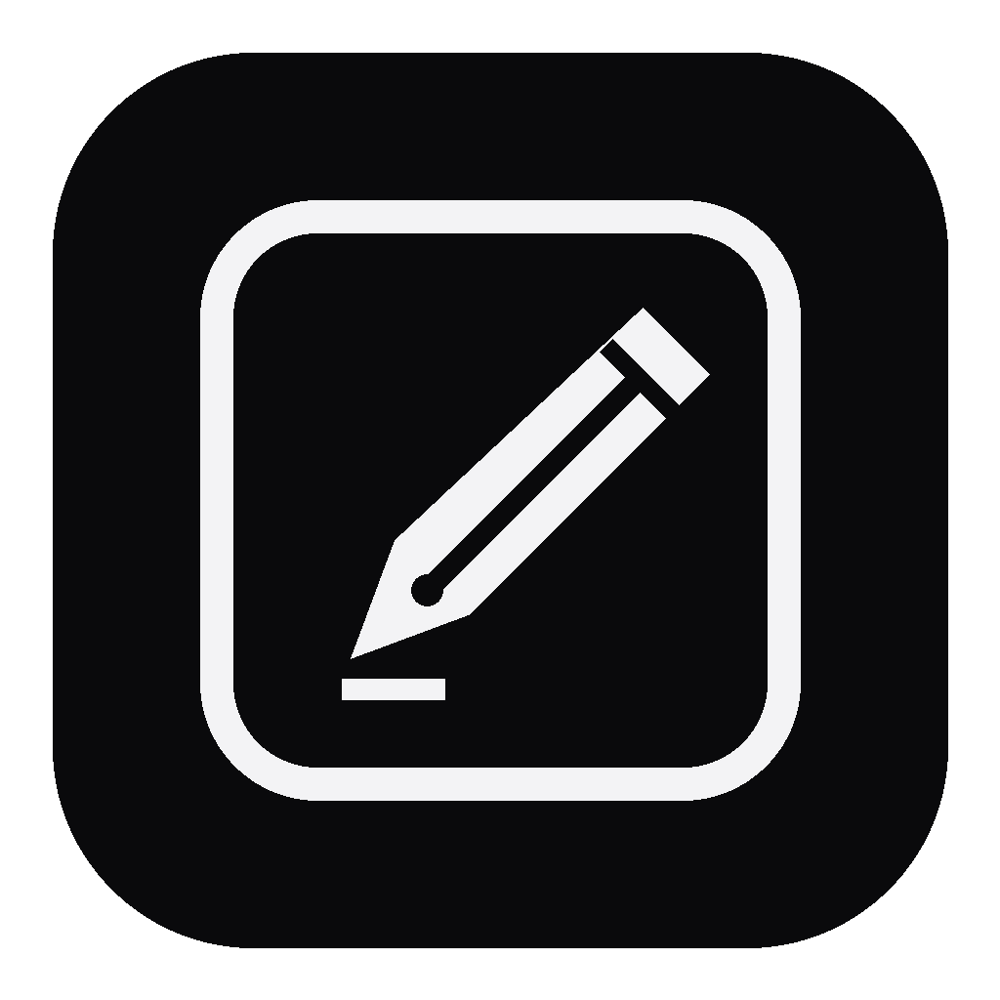

Natural ink
Round and chisel pens respond to pressure from supported pen tablets. Pan across an adjustable 4096 × 4096 canvas.
A focused whiteboard for macOS and Windows
A quiet canvas for working through problems. Write naturally with a pen tablet, highlight what matters, and keep your board close.
Developer previews · Source packages — one local build required.
Mac: macOS 13+ · Windows: Windows 11 x64.
Mac installation · Windows installation
Made for working things out
Round and chisel pens respond to pressure from supported pen tablets. Pan across an adjustable 4096 × 4096 canvas.
Paste images, move and resize them, then write or highlight on top.
Switch the board to black and your black ink becomes white automatically.
Save editable boards, recover your latest work, or export the full canvas as PNG.
Install
Download the package, then double-click the ZIP in Finder.
In Terminal, type bash , drag Build-and-Run.command into the window, and press Return.
Drag dist/problem-slate.app into your Applications folder.
This release contains source code and builds on your Mac. It requires macOS 13+ and Apple Command Line Tools. If needed, run xcode-select --install once. The app is locally signed and has not been Apple-notarized.
Windows developer preview
Choose Download for Windows, then use Extract All on the ZIP.
Install the .NET 10 SDK for Windows x64. This is needed only to build the app.
Double-click Build-and-Run.cmd. Afterwards, open dist/win-x64/problem-slate.exe directly.
The Windows source has not yet been compiled or tested on Windows or pen-tablet hardware. It includes pen, chisel, highlighter, eraser, pan, image paste, dark mode, undo and recovery. Windows boards use .wslate; Mac .slate files are not interchangeable. Use PNG to share flattened boards. No paid developer account is required. The built EXE is unsigned.

Open a clean board and start writing.